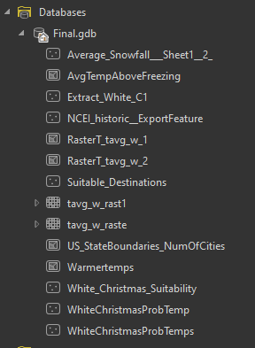

GIS Coursework / Week 12
White Christmas Final Project

Overview
A final project analyzing which U.S. cities offer the best odds of a snowy Christmas, combining historical snowfall probability with location data to recommend travel destinations.
Process
Used Select by Attributes and Summarize Within on snowfall probability and city data to identify and rank candidate locations.
